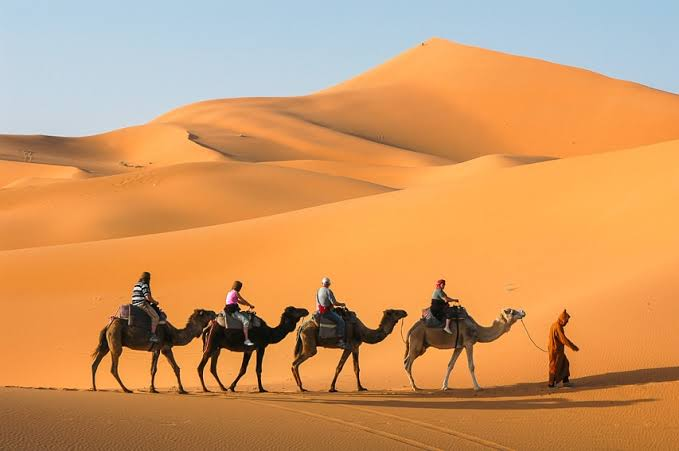
2 JOURS / 1 NUIT
Merzouga Express
Balade à dos de dromadaire, coucher de soleil et nuit sous les étoiles.
À partir de 1 500 DH / personneUNE EXPÉRIENCE INOUBLIABLE
Des dunes dorées, un ciel étoilé et une culture authentique. Vivez une aventure exceptionnelle au cœur du désert marocain.
Dunes à perte de vue et panoramas spectaculaires.
Découvrez les traditions et l'hospitalité locales.
Une équipe locale disponible pendant votre séjour.
Des expériences respectueuses du désert et des communautés.
NOS CIRCUITS
Choisissez votre aventure et vivez le désert autrement.

Balade à dos de dromadaire, coucher de soleil et nuit sous les étoiles.
À partir de 1 500 DH / personne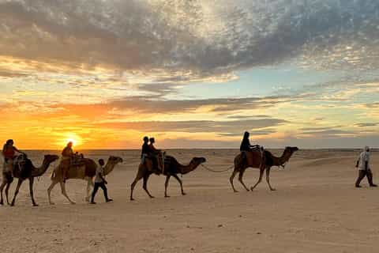
Dunes, musique berbère, feu de camp et nuits magiques.
À partir de 2 200 DH / personne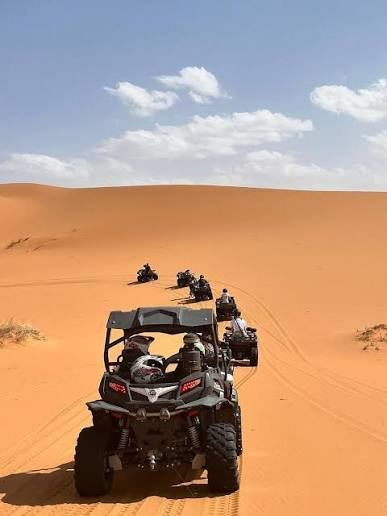
Explorez les paysages variés du désert et les oasis cachées.
À partir de 3 400 DH / personne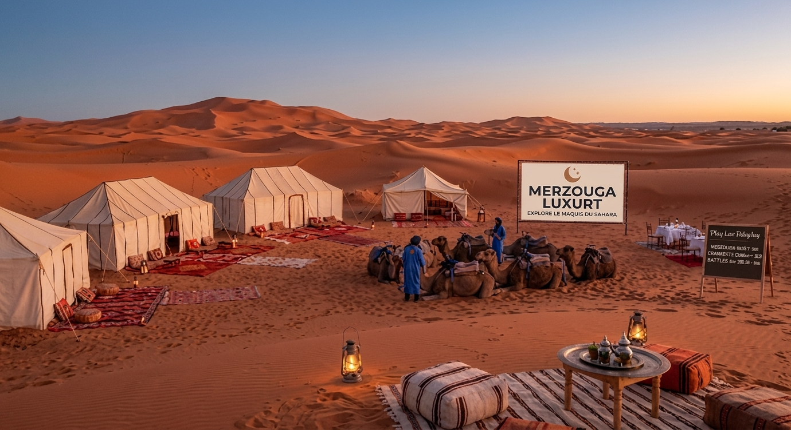
Créez votre itinéraire selon vos envies, votre rythme et votre budget.
Sur demande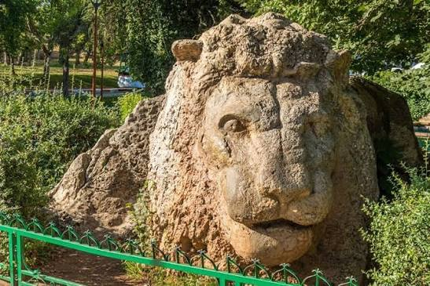
Circuit de luxe au départ de Fès. Découvrez le glamping dans un cadre saharien exceptionnel.
Depuis 5 550 MAD / personne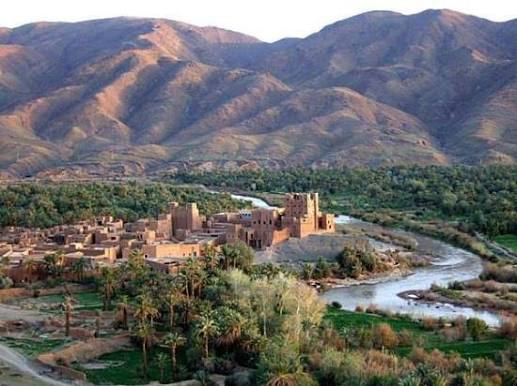
Circuit de luxe au départ de Fès. Glamping au cœur de paysages sahariens époustouflants.
Depuis 4 350 MAD / personne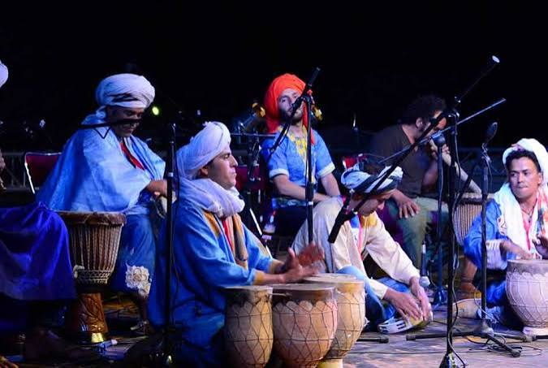
Aventure de trois jours dans le désert au départ de Fès, incluant deux nuits à Erg Chebbi.
Depuis 4 800 MAD / personne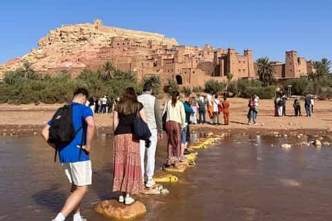
Traversée complète depuis Fès vers les dunes de Merzouga jusqu'à Marrakech.
Depuis 6 200 MAD / personne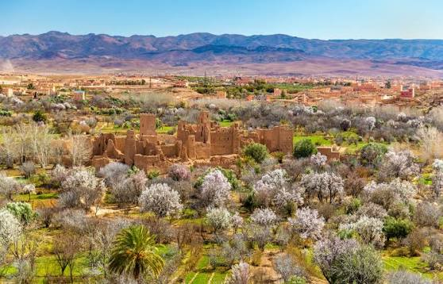
Traversée du Haut Atlas, Kasbah Aït Ben Haddou, Gorges du Dades et bivouac de luxe à Merzouga.
Depuis 4 500 MAD / personne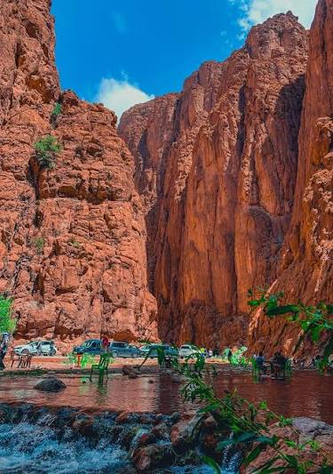
Un itinéraire détendu au départ de Marrakech. Explorez la Vallée du Draa, Ouarzazate et Erg Chebbi.
Depuis 5 800 MAD / personne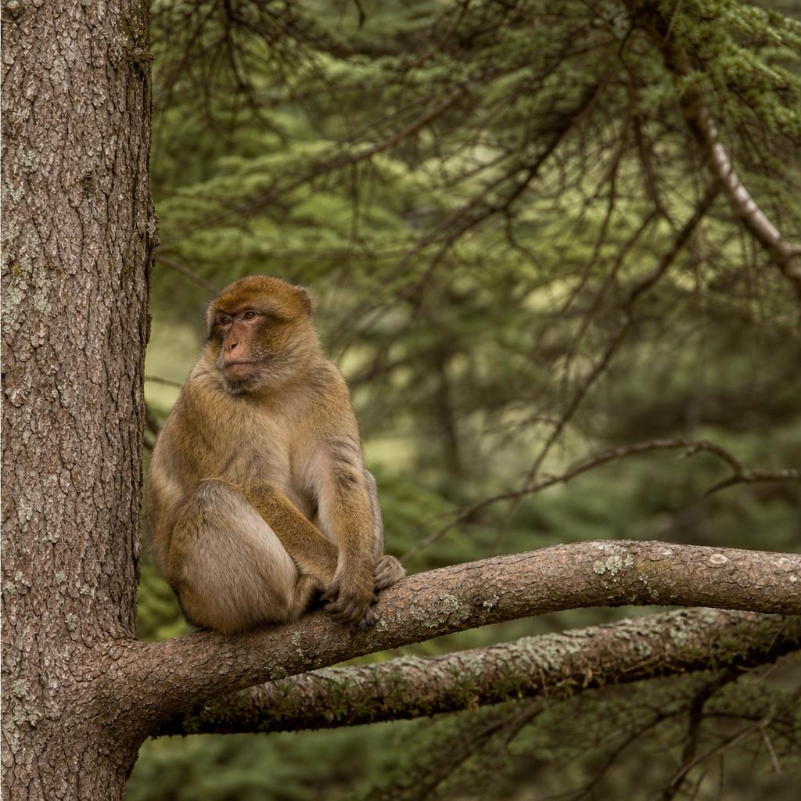
Départ de Marrakech, nuit au campement de luxe à Merzouga, et dépose finale à Fès.
Depuis 4 900 MAD / personne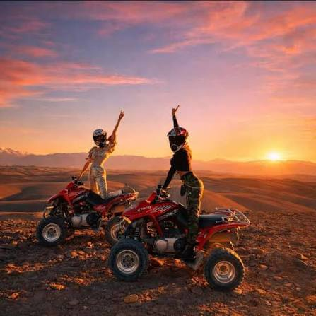
Une alternative proche de Marrakech : nuit sous les étoiles dans le désert d'Agafay au pied de l'Atlas.
Depuis 2 800 MAD / personne
Départ de Casablanca, visite de Rabat, Fès, traversée du Moyen Atlas et séjour à Merzouga.
Depuis 7 200 MAD / personne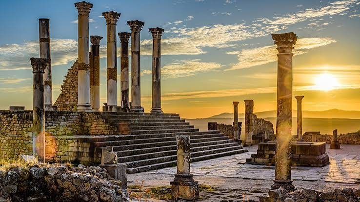
Itinéraire complet : Casablanca, Fès, dunes de Merzouga, Gorges du Dadès, Ouarzazate et Marrakech.
Depuis 8 900 MAD / personne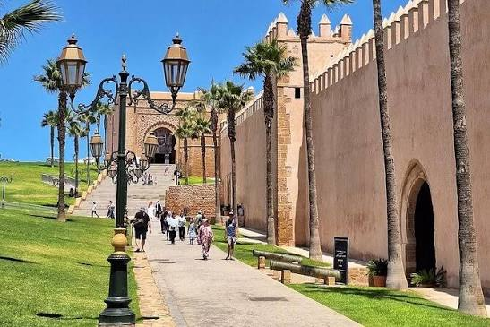
Un trajet direct vers les dunes d'Erg Chebbi via Beni Mellal et Errachidia pour optimiser votre temps.
Depuis 5 900 MAD / personne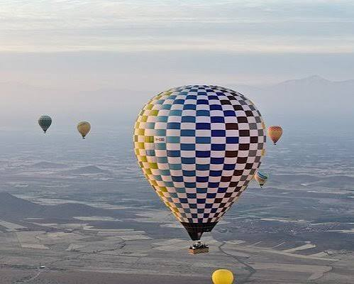
Circuit privatif sur mesure au départ de l'aéroport ou de votre hôtel à Casablanca avec chauffeur dédié.
Sur demande
POURQUOI NOUS CHOISIR ?
Merzouga Luxury Desert vous accompagne pour découvrir les dunes de l'Erg Chebbi et la richesse du Sud marocain à travers des expériences authentiques et soigneusement organisées.
GALERIE
Des moments à vivre, photographier et partager.
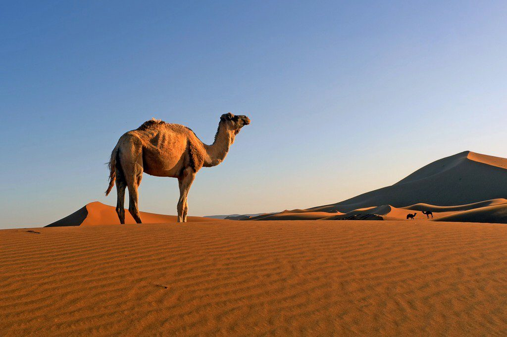
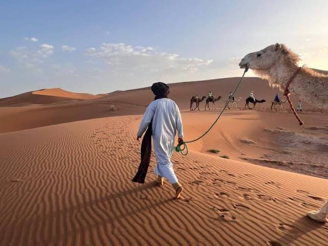
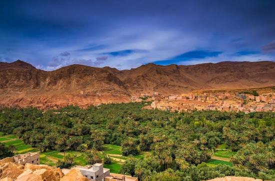
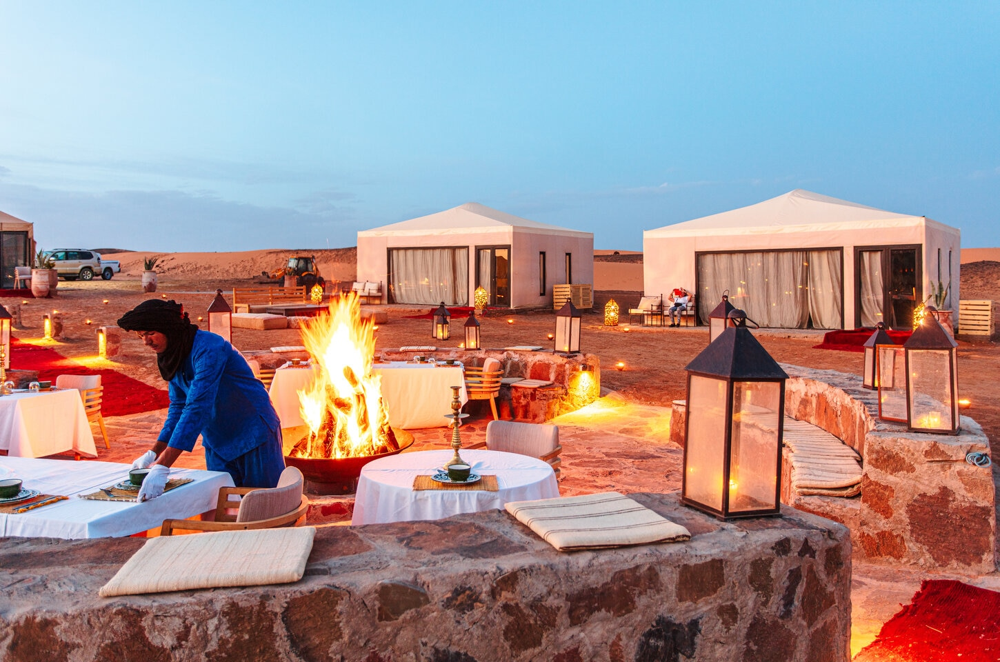
TÉMOIGNAGES
“Une expérience magique ! Tout était parfaitement organisé et notre guide était formidable.”
Sophie L. ★★★★★
“Le coucher de soleil sur les dunes est tout simplement incroyable. Merci à toute l'équipe !”
Thomas B. ★★★★★
“Un voyage authentique, des gens formidables et des paysages à couper le souffle.”
Camille D. ★★★★★
CONTACT
Envoyez-nous votre demande. Nous vous répondrons rapidement pour préparer votre séjour.